前段时间，有好几个读者在评论中建议俺分享“宏观经济”方面的信息。如今元旦已过，花了点时间汇总2015年关于经济方面的报道。
为了确保信息来源的【全面性】，本文转载的文章，既有墙外的，也有墙内的；既有民间的媒体，也有官府的媒体。
习呆呆老是忽悠“中国梦”，很多人一直沉浸其中（说难听点就是“意淫”）。如果你也是这类人，此文或许会让你有所醒悟。
政治制度如果还是老样子，只有“赵家人”（权贵）才能享受到“中国梦”；至于普通屁民，只剩下“白日梦”。
《凤凰财知道：目前中国的经济形势到底有多严峻？ @ 微信》 2015年9月6日
（编程随想注：这篇包含很多图表，让你直观地感受天朝经济的严峻。在俺写本文的时候，这篇文章已经被微信的网管干掉了）
《政局不稳让中国经济发展面临风险 @ 纽约时报》 2015年8月26日
（编程随想注：引文中的粗体是俺标注的）
《第二轮下岗潮将来袭 中国面临倒闭潮和失业潮双面夹击 @ 今日头条》 2015年11月9日
《中国经济调整远远未结束 @ 新浪财经》 2015年08月17日
（编程随想注：引文中的粗体是俺标注的）
《中国经济数据蛛丝马迹中的真相——仍是非常糟糕的时期 @ 搜狐财经》 2015年9月11日

关于2015年的股灾，俺当时汇总过一篇《每周转载：关于天朝近期的股灾（外媒报道及大量网友评论）》。
考虑到本文篇幅已经很长，就不再贴出“股灾”的相关报道了。
除了上面那篇《每周转载》，俺后来又另外写了两篇“股市点评”（如下），有兴趣的同学可以去瞧一瞧。
《股市点评：一头伪装成“改革牛”的“杠杆牛”》
《股市点评：为啥大多数散户必定亏钱？——心理学层面的分析》

《中国外汇储备真的充足吗？ @ FT/金融时报》 2015年09月03日
（编程随想注：引文中的粗体是俺标注的）
《中国上演资本外逃 @ WSJ/华尔街日报》 2012年10月16日
（编程随想注：引文中的粗体是俺标注的）
《今年头8个月 中国遭遇大规模资本外流 @ FT/金融时报》 2015年10月20日
《中国外汇储备9月缩水430亿美元 @ FT/金融时报》 2015年10月08日
《8月份中国外汇储备降幅创纪录 @ FT/金融时报》 2015年09月07日
《中国加大力度遏制资本出逃 @ RFA/自由亚洲电台》 2015年9月3日
（编程随想注：引文中的粗体是俺标注的）
《外资离场之忧 @ FT/金融时报》 2015年06月16日
《莫之许：外资一去不复返》 2016年1月2日
《CNN：大量资金正在飞离中国 @ 墙外楼》 2015年12月9日
（编程随想注：引文中的粗体是俺标注的）
《人民币持续贬值有破纪录之势 @ FT/金融时报》 2015年12月21日
《45家企业弃发500亿债券 违约加剧风险担忧 @ 第一财经日报》 2015年11月24日
《中国债券市场大麻烦——债务违约常态化 国企不再安全 @ 华尔街见闻》 2015年06月06日
《中产死于炒股 草根死于P2P——集资骗局谁来负责？ @ 腾讯网》 2015年12月21日
（编程随想注：引文中的粗体是俺标注的）
《一年吸金700億的理財平台「e租寶」被查 @ 端傳媒》 2015年12月17日
《论e租宝的倒掉与中国大妈的P2P江湖 @ 搜狐网》 2015年12月23日
《e租宝投资者央视大楼外维权 抗议官方媒体报道浑淆视听 @ RFA/自由亚洲电台》 2015年12月14日
《e租宝事件升级7省34市上万人联合示威多地被镇压 @ 博讯网》 2015年12月23日
《“MMM骗局”洗劫中国，百亿民间资产被清零 @ 百度百家》 2015年12月30日
《MMM 骗局在中国崩盘 @ Solidot》 2015年12月28日
《大大集团账面仅剩1亿多元 新成立子公司三证与公章遗失 @ 新浪财经》 2015年12月22日
《P2P成非法集资重灾区 涉案金额仅南京就50个亿 @ 新浪财经》 2015年07月29日
《东莞屡屡传出老板跑路 “世界工厂”陷转型阵痛 @ 人民网》 2015年11月13日
《製造業寒冬 珠三角70廠倒閉 @ 東方日報》 2015年11月03日
《“中国制造”正从美国市场里消失 @ 商业见地网》 2015年11月17日
《苹果代工厂暂停招工 员工排队离职 @ 新浪科技》 2015年11月02日
《配件商接连倒闭 珠三角低端制造现危局 @ 腾讯网》 2015年10月26日
《福昌工厂倒闭启示录——很可能会引起连锁反应 @ 新浪科技》 2015年10月12日
《中国经济放缓的又一个受害者——亚洲电子零部件供应商 @ WSJ/华尔街日报》 2015年08月31日
《三星最大PBA代工厂倒闭 普光苏州韩籍高管跑路 @ 新浪财经》 2015年7月3日
《盲目扩张致产能过剩 纺织服装产业步入深度调整 @ 中国投资指南》 2015年9月24日
（编程随想注：请注意该网站的域名“www.fdi.gov.cn”——这可是朝廷官方网站哦）
《拿什么来拯救关乎1.7亿人就业的纺织服装业？ @ 虎嗅网》 2015年9月17日
《华东拥有8家服装厂的纺织巨头资金链断裂 @ 中华纺织网》 2015年10月15日
《中国鞋业成本优势殆尽 越南企业蚕食市场 @ 第一财经日报》 2015年2月11日
（编程随想注：引文中的粗体是俺标注的）
《2015家电三大金刚过的咋样 @ 腾讯网》 2015年12月25日
《汽车零部件行业涌现裁员潮 @ 搜狐网》 2015年10月20日
《特斯拉中国大幅裁员 @ 经济观察报》 2015年3月6日
《首家国有造船厂倒闭——2016年造船业将迎破产高峰 @ 腾讯网》 2016年01月02日
《中国钢企遭遇大面积亏损 @ FT/金融时报》 2015年12月4日
（编程随想注：引文中的粗体是俺标注的）
《中国钢材消费量20年来首次负增长 钢厂明年或现“倒闭潮” @ 财经网》 2015年12月08日
《钢“冬”之下，钢铁工人怎样“熬冬” @ 中国新闻网》 2015年11月02日
《螺纹钢价格走势，实体经济还有救吗？ @ 墙外楼》 2015年11月17日
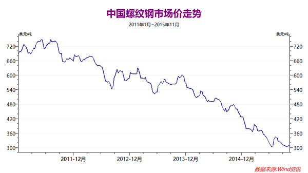
《“僵尸工厂”拖累困境中的中国经济 @ 纽约时报》 2015年8月31日
《一吨煤卖不过一方沙子 山西超八成县发不了工资 @ 华夏时报》 2015年12月26日
《近半矿井停产停建 鼓励员工休假停薪 煤炭业冰点 @ 华夏时报》 2015年10月28日
《中国煤矿工业衰落，大幅裁员加剧社会动荡隐忧 @ 纽约时报》 2015年12月17日
《汉能自曝裁员2000人原因 直销改分销能否拯救民用业务？ @ 每经网》 2015年9月2日
（编程随想注：“汉能”是咱们天朝的能源巨头，曾经一度很风光）
《易宪容：当前中国房地产市场的现状 @ 博谈网》 2015年10月22日
《华光地产破产拉开中国房企倒闭潮序幕？ @ 金融界》 2015年08月19日
《佳兆业贷款违约 下一个会是谁？ @ 南华早报》 2015年1月7日
《BAT缩小招聘 互联网或将面临寒冬期 @ 人民网》 2015年10月29日
（“人民网”那可是朝廷喉舌，连朝廷自己都承认“互联网或将面临寒冬期”）
《百度停止招聘邮件流出，现在想进百度得李彦宏点头 @ 爱范儿》 2015年10月20日
《腾讯要停止外包招聘？在缩减招聘上BAT三家聚齐了 @ 网易》 2015年10月21日
《马云宣布阿里巴巴暂停招聘 @ FT/金融时报》 2015年04月30日
《跑不赢摩尔定律 联想等一大波IT企业要裁员 @ 腾讯网》 2015年9月23日
《扎根17年 传诺基亚苏州工厂本月底关闭 @ 新浪科技》 2015年12月05日
《微软关闭北京及东莞手机工厂 中国产业升级面临阵痛 @ 新华网》 2015年3月4日
《知名外企相继撤离中国 学者称大势所趋 @ 新浪财经》 2015年2月27日
《外企调整在华布局现隐性撤离 中国制造变印尼制造 @ 新浪财经》 2014年10月20日
《路透社：跨国公司正撤出中国 @ 新浪财经》 2014年01月21日
《经济参考报：东北陷财政困局——有的工资都发不出来了 @ 中国数字时代》 2015年12月7日
《10月中国财政收支差额再恶化 拿什么稳增长？ @ 凤凰网》 2015年11月12日
《最近各地税务局都在疯狂查税，民企的老板和会计都头大了 @ 墙外楼》 2015年10月12日
《最近各地税务局都在疯狂查税，民企的老板和会计都头大了(续) @ 墙外楼》 2015年10月22日
《中国财政收入主体税种现金融危机以来最严重下滑 @ 金融界》 2015年09月16日
《中国国家资产负债率明显上升 地方政府杠杆率偏高 @ 新浪财经》 2015年07月24日
《何清涟：2015年中国经济关键词——失业 @ 美国之音》 2015年12月30日
《i投资：谈一谈中国诡异的失业率 @ 微信》 2015年10月13日
（编程随想注：引文中的粗体是俺标注的）
俺博客上，和本文相关的帖子（需翻墙）：
《每周转载：天朝近期的宏观经济形势很不妙（国内外各方报道）》
《股市点评：一头伪装成“改革牛”的“杠杆牛”》
《股市点评：为啥大多数散户必定亏钱？——心理学层面的分析》
《扫盲“货币经济学”基本概念——从“利率”到“央行货币政策”》
《每周转载：关于天朝近期的股灾（外媒报道及大量网友评论）》
《每周转载：帮你分析天朝的房地产市场》
为了确保信息来源的【全面性】，本文转载的文章，既有墙外的，也有墙内的；既有民间的媒体，也有官府的媒体。
习呆呆老是忽悠“中国梦”，很多人一直沉浸其中（说难听点就是“意淫”）。如果你也是这类人，此文或许会让你有所醒悟。
政治制度如果还是老样子，只有“赵家人”（权贵）才能享受到“中国梦”；至于普通屁民，只剩下“白日梦”。
★综述
《凤凰财知道：目前中国的经济形势到底有多严峻？ @ 微信》 2015年9月6日
（编程随想注：这篇包含很多图表，让你直观地感受天朝经济的严峻。在俺写本文的时候，这篇文章已经被微信的网管干掉了）
PMI
制造业采购经理指数（PMI），是通过对企业采购经理的月度调查结果统计汇总、编制而成的指数，是国际上通用的监测宏观经济走势的先行性指数之一，具有较强的预测、预警作用。PMI是一个综合指数，由5个扩散指数（分类指数）加权计算而成。PMI通常以50%作为经济强弱的分界点，PMI高于50%时，反映制造业经济扩张；低于50%，则反映制造业经济收缩。
制造业PMI指数
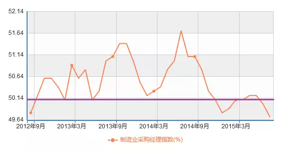
非制造业PMI指数
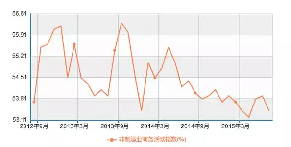
中美欧制造业PMI指数对比
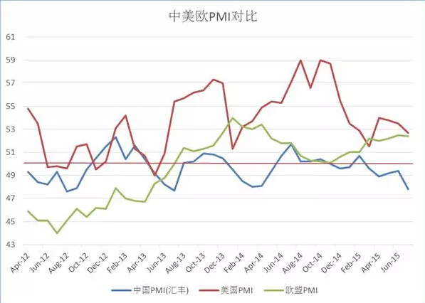
克强指数
克强指数（Li keqiang index），是英国著名政经杂志《经济学人》创造的用于评估中国GDP增长量的指标，以中国国务院总理李克强的名字命名。
克强指数是三种经济指标：“耗电量、铁路货运量、银行贷款发放量”的结合。
该杂志认为，克强指数比官方GDP数字更能反映中国经济的现实状况。
发电量
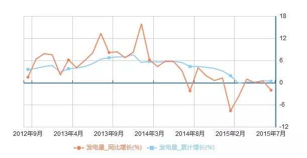
铁路货运量（同比增长/累计增长）
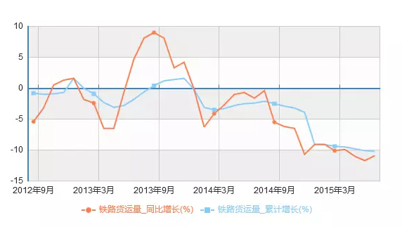
克强指数（累计值/当月值）
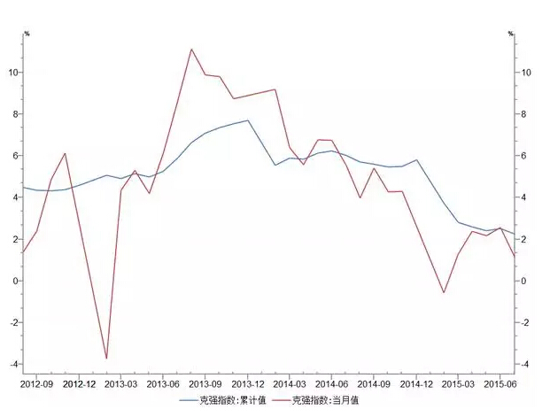
工业指数
工业增加值（累计同比/当月同比）
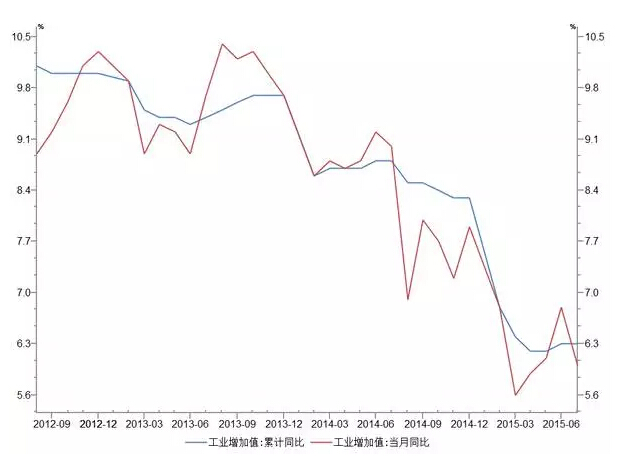
工业企业利润总额（累计同比）
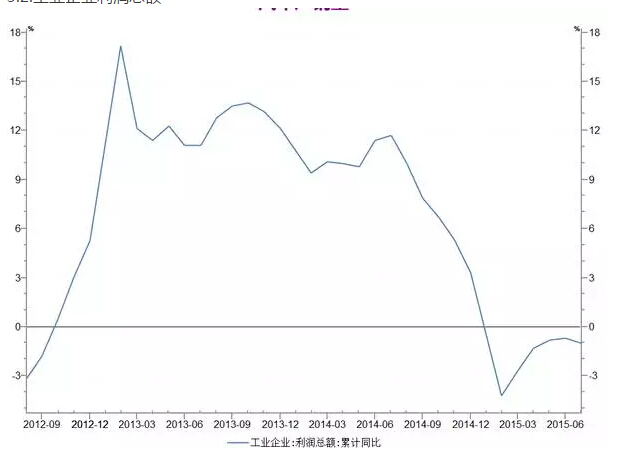
三驾马车
传统意义上拉动中国经济增长的三驾马车——出口，内需，投资
出口总量（同比增长/累计增长）
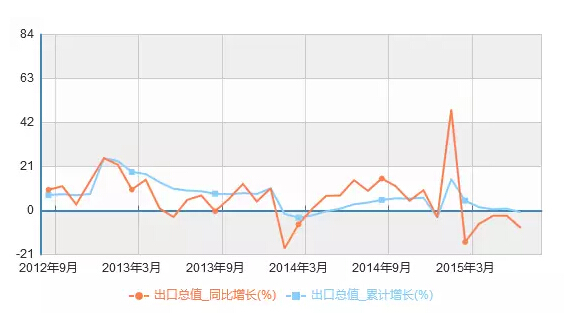
社会消费零售（同比增长/累计增长）
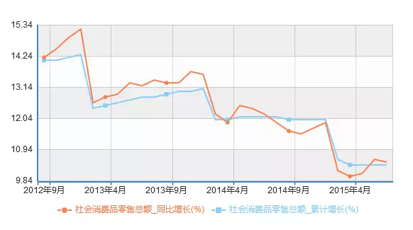
固定资产投资额（累计增长）
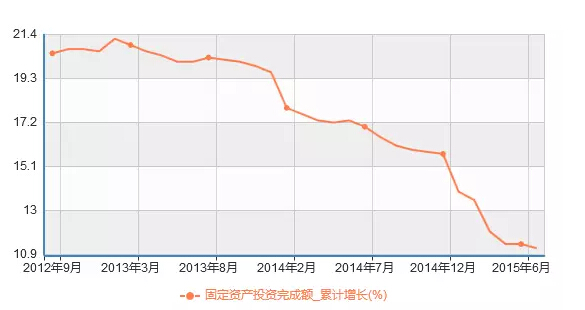
房地产
（编程随想注：大环境如此差，房价却在2015下半年反弹，是比较诡异的。大伙儿别忘了“2015年股灾给中产阶级的沉重打击”）
商品住宅销售面积
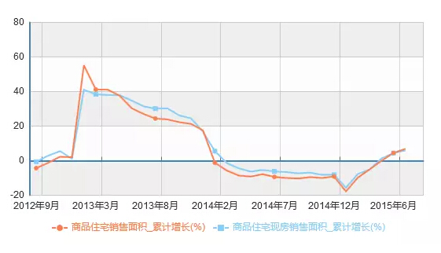
房地产开、竣工面积（累计增长）
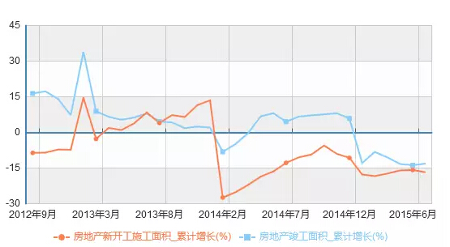
百城住宅价格指数（一线城市/二线城市/三线城市）
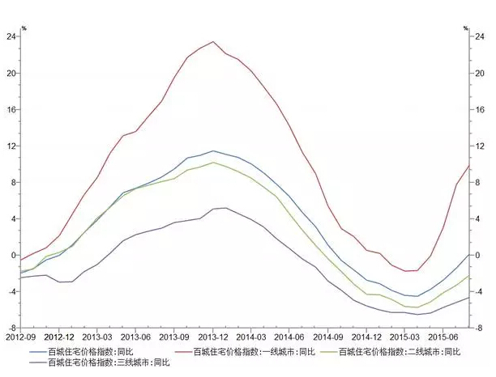
景气指数
宏观经济景气指数（预警指数/一致指数/先行指数/滞后指数）
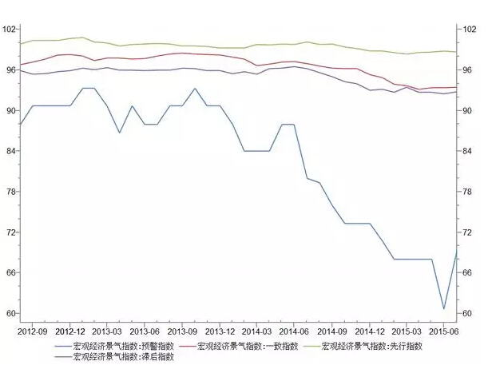
《政局不稳让中国经济发展面临风险 @ 纽约时报》 2015年8月26日
（编程随想注：引文中的粗体是俺标注的）
极权主义政权或许善于部署资本和劳动力，以实现粗犷的经济增长。但专制国家并不擅长培育创新和创造力，它们也很少能在没有思想或言论自由的地方兴起。尽管“要经济增长，不要示威游行”在过去似乎行得通，但在达到中等收入水平的国家，官僚主义的指挥和控制结构，在应对公民更复杂的诉求时就会遇到困难。
......
为理解中国的困境，杜大伟将中国的经历与一些最有名的故事进行了比较。这些故事讲述的是过去半个世纪里，经济发展取得成功的一些国家。它们分别是在70年代初达到中国当前的人均收入水平的日本、在80年代初跨过这道门槛的台湾，以及在1990年前后达到这个水平的韩国。
最明显的地方不是这三个国家全都都遵循了类似的道路，而是中国偏离了它们的轨迹。
在这三个国家，家庭支出一直是主要的需求来源。但当它们变得大致和眼下的中国一样富裕时，家庭支出逐渐降低至国内生产总值(GDP)的大约一半。在发展初期大幅上涨的投资率，也在同期达到顶峰，大致占GDP的35%。
按这些标准来衡量，中国经济颠倒了：家庭的消费支出只占GDP的35%，处于全世界最低的水平。而投资率却非常高，接近GDP的50%，但这种投资的生产率却相当差。
这种情况在很大程度上要归咎于中国在管理经济时的威权主义控制方式。由于向城市的合法迁徙受到限制，产生了一个由没有城市合法居留地位的务工人员构成的底层，他们辛苦劳作，但却工资微薄。这抑制了消费支出，阻碍了城市发展。国有垄断企业把大量利润用来再投资，而不是让政府用于社会福利的开支。接近零的存款利率为企业提供了低成本的贷款，却不利于储户。
这意味着中国的转型会复杂得多。日本、台湾和韩国开始转型时，都存在大量贸易逆差。投资率下降时，它们的逆差才变成顺差，带动了增长。和它们不同的是，中国多年来一直保持着巨额的顺差。但依然脆弱的世界经济，无法再吸纳更多的中国出口。
《第二轮下岗潮将来袭 中国面临倒闭潮和失业潮双面夹击 @ 今日头条》 2015年11月9日
中国就业研究所所长曾湘泉说：要准备迎接第二轮下岗潮。这次下岗潮的杀伤力比起第一次可就大多了。现在的在职员工，“房奴”的比例相当大，超前消费的的习惯已经养成，一旦失去稳定的工作，立马陷入困境。到时候，银行的贷款难以收回，金融危机将不期而至。资金链断裂，企业倒闭，工潮迭起 ，一切都举步维艰。
今年以来，受股市一直不景气，人民币贬值的影响，很多企业倒闭，一些外企撤出中国市场，让很大一部分人失业或下岗。而目前的就业形势也非常严峻，就业难和招工难并存。
一些大学生毕业在找工作时总是觉得找不到满意的工作，一些企业又总觉得岗位根本没人来应聘。而如今据曾湘泉所言，统计局公布的登记失业率根本没有敏感性。更称，由于国企重组等因素影响，要准备迎接第二轮下岗潮。
这一言论立马引起了网友的热议，直呼：“博士都找不到工作啦”、“这是失业，不是下岗，下岗有补贴的”、“国企重组，裁员裁的是谁?”
如果真入曾湘泉所言，那么国家确实要对就业政策做出调整了，更要好好研究，如何才能调整好就业形势，做到不浪费人才，减少失业待工的人。
国家统计局数据显示：2015年1月制造业PMI指数跌破荣枯线，跌至49.8，为最近28个月的最低点。越来越多的头牌外资企业开始加速撤离中国。中国面临着制造业倒闭潮和失业潮双面夹击的局面，中国人迎来改开后第三次命运大转折。
《中国经济调整远远未结束 @ 新浪财经》 2015年08月17日
（编程随想注：引文中的粗体是俺标注的）
产能过剩多严重？2008年我们计算钢铁行业的产能过剩，当时的结论是4亿吨的需求，6亿吨产能，2亿吨产能过剩。后面，6亿吨的需求，10亿吨的产能，4亿吨产能过剩，清理起来就难了。现在我们处理的是两轮过热叠加起来的产能过剩，各行各业为什么这么困难？因为整个经济过热都产生了产能过剩问题。产能的后面是什么？是企业。过多的产能意味着过多的企业，产能后面还有什么？从实体的角度看的是企业，金融的角度就是坏账。
产能过剩，我借了钱、投了资，建了很多东西之后没有办法用，无法还债，债务问题就出来了，这就是我们清理的各种问题。
现在，从本质的意义来讲就是在经历一场经济危机，就是吞下或者是在咀嚼过热的后果。天下一切经济过热，泡沫早晚会破，一切经济过热，一切泡沫最后的结果都一样。就像股市过热，早晚会崩盘崩盘，结果都是一样的。不要幻想我们过热不会有这样的恶果，别人的过热才有这样的恶果。当年日本人也是这么说：“我们不一样，我们是经济动物，我们没事。”最后的结果其实都是一样的。
......
你要认识到一个问题，在过热当中形成的这些企业，不可能都存活下去，不可能都有大的发展。不管这个产业在中国是不是朝阳产业，不管在中国未来有没有发展，不可能有这么多鱼目混杂的企业生存，总要优胜劣汰。
《中国经济数据蛛丝马迹中的真相——仍是非常糟糕的时期 @ 搜狐财经》 2015年9月11日
★金融业
◇2015股灾
关于2015年的股灾，俺当时汇总过一篇《每周转载：关于天朝近期的股灾（外媒报道及大量网友评论）》。
考虑到本文篇幅已经很长，就不再贴出“股灾”的相关报道了。
除了上面那篇《每周转载》，俺后来又另外写了两篇“股市点评”（如下），有兴趣的同学可以去瞧一瞧。
《股市点评：一头伪装成“改革牛”的“杠杆牛”》
《股市点评：为啥大多数散户必定亏钱？——心理学层面的分析》
◇资本大规模流出
《中国外汇储备真的充足吗？ @ FT/金融时报》 2015年09月03日
（编程随想注：引文中的粗体是俺标注的）
有关外储充足性的观点或许值得强调——据中国发布的数据，自2014年6月以来，中国的整体美元外汇储备下降了3400亿美元。
将币值变动（很可能占近期中国外汇储备损失的不到70%）和中国外汇资产重组（比如向政策性银行注资）纳入考虑范围后，花旗提出问题：中国央行还能允许外汇储备下降到什么程度？
“我们认为，中国央行外储大幅损失可能引发两种忧虑。第一种与市场对中国金融稳定的认知有关，或者换句话说：中国的外汇储备降到什么程度，会使市场参与者预测中国风险上升？另一个可能的忧虑是，中国外汇储备充足性和中国整体货币环境的关系，换句话说：外汇储备损失是否会引起货币环境收紧，并因此成为增长风险？”
“有理由质疑中国外汇储备充足性的稳健性。尽管3.7万亿美元听起来很多，但人们有可能展示中国的外储水平事实上并不那么稳健。我们使用一套基于IMF《外汇储备充足性评估》(Assessing Reserves Adequacy)框架的方法来展现这一点。IMF评估方法的出发点是，一国应拥有足以偿还30%的短期外债的储备；加上出口的5%或者10%（5%适用于浮动汇率制的国家；10%适用于盯住汇率制的国家）；加上外部负债组合的10%或15%（较大的比例适用于盯住汇率制的国家），再加上广义货币(M2)的5%或者10%（同样，较大的数字适用于盯住汇率制的国家）。这一总和是IMF用来衡量不同国家外汇储备充足性的‘指标’。就中国而言，‘指标’表明中国央行至少应拥有2.6万亿美元的储备。实际操作中，IMF建议一国的储备至少应达到这些数字的总和，而达到外储充足性要求意味着一国外储达到上述指标的100%至150%。因此，拥有3.7万亿美元外储的中国接近150%的‘上限’。但图9表明，按新兴市场的标准衡量，中国的外储充足性较低：在我们考察的国家中，只有南非、捷克和土耳其得分更低。”
《中国上演资本外逃 @ WSJ/华尔街日报》 2012年10月16日
（编程随想注：引文中的粗体是俺标注的）
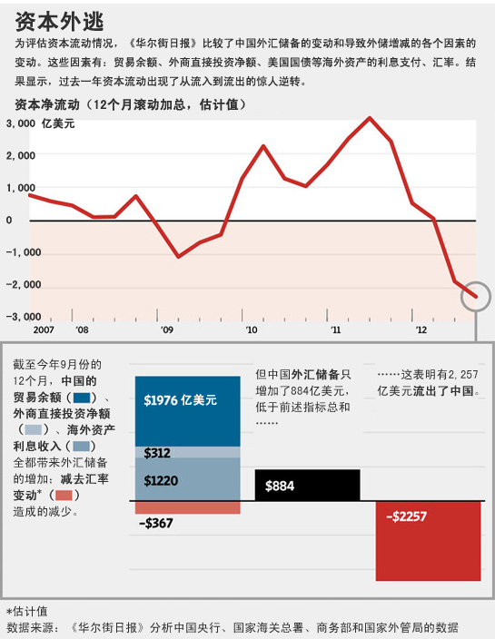 《华尔街日报》估计在截止今年9月的一年内流出中国的资金数量达到2,250亿美元，这同时包括合法和非法的资金流出额。多位经济学家也试图估算流出中国的资金数量。研究机构Lombard Street Research的经济学家杜马(Charles Dumas)估计同期中国资金净流出数量为3,000亿美元。
为了估计资金流出的规模，《华尔街日报》比较了中国外汇储备的变动规模和导致外汇储备增减的主要项目的变化情况。这些项目包括贸易顺差、外国直接投资、外国资产生息以及汇率的变动。
等式的两边应该一致。如果外汇储备的增量大于上述各项之和的增量，这就表明资金净流入中国；如果外汇储备的增量小于上述各项之和的增量，甚至开始下降，这就意味着资金因某种原因流出中国。2011年四季度中国外汇储备规模自1998年以来出现首次季度下滑，2012年二季度再次出现这种现象。这一迹象表明，资金流出的规模已经大到足以抵消因贸易顺差、外国直接投资及现有储备生息所流入的资金总量。
《今年头8个月 中国遭遇大规模资本外流 @ FT/金融时报》 2015年10月20日
《中国外汇储备9月缩水430亿美元 @ FT/金融时报》 2015年10月08日
《8月份中国外汇储备降幅创纪录 @ FT/金融时报》 2015年09月07日
《中国加大力度遏制资本出逃 @ RFA/自由亚洲电台》 2015年9月3日
（编程随想注：引文中的粗体是俺标注的）
《华尔街日报》的报道说，中国的外汇储备去年接近4万亿美元，但自那之后减少了超过3410亿美元。
......
报告估计，自8月11日人民币大幅贬值以来，资本流出中国的速度可能已经加快，达到1,500亿至2,000亿美元。摩根大通 (J.P. Morgan Chase & Co.) 经济学家朱海滨估计，资本外流规模已经达到了“引人注目”的水平，从2014年第三季度到今年第二季度总计达到3400亿美元。
《华尔街日报》的报道说，如果人民币进一步贬值，或中国经济显示出新的疲软迹象，未来几个月的资本外逃现象可能加重。中国社会科学院高级经济学家张明说，由于市场预期人民币会进一步贬值，第三季度资本外流现象可能会更严重。经济学家程晓农表示，中国政府试图遏制资本外流的手段评论说：
“一般来说，在中国有外汇存款是不安全的。中国政府随时都可以说，你现在不能提取外汇存款，那你一点办法都没有了。因为中国政府可以随便不讲道理。”
《外资离场之忧 @ FT/金融时报》 2015年06月16日
《莫之许：外资一去不复返》 2016年1月2日
外资对中国经济究竟有多重要？实际上，中国经济20馀年来的发展并没有什么秘密，其主要是对外开放、而不是所谓改革的结果，外资在中国经济发展中，起着核心火车头的作用：外来资本、技术、管理与本土劳动力的结合，构成了中国外向经济的主干，并带动了大批民营企业作为外向经济一部分的发展，构成了中国经济发展的主火车头；外向经济的出现，也带动了政府和国企主导的基础设施和基本服务水准的提升，包括各种基础产业的扩展、城市化进程的加快等等，所有这些背后的庞大投资，构成了中国经济发展的另一个火车头；最后，在现有外汇管理体制下，外资的进入，也意味着对应的基础货币的释放，这带来了相当丰富的流动性，“台风来了，猪都会飞”，充沛的流动性也为中国经济的表面荣景提供了相当的润滑和助力。
外资如此重要，同时也就意味着，外资的撤离会多么地重创中国经济。首先，外资的撤离，意味着中国经济将失去相当部分的持续增长动力，经济失速不可避免。
《CNN：大量资金正在飞离中国 @ 墙外楼》 2015年12月9日
（编程随想注：引文中的粗体是俺标注的）
据《CNN》12月7日报道，周一，中国中央银行报告说中国的外汇储备为3.4万亿美元，是自2013年初以来的最低水平。11月份，中国的外汇储备降幅之大为历史罕见。
很多投资人试图将资金，至少部分资金移出中国。很多中国人更看好海外的机会，无论是纽约或伦敦的房地产，昂贵的艺术品，还是外国的股票或债券。
从中国获取准确数字是很难的，但是“Capital Economics”预测11月份的资金外流创下了记录。
“Capital Economics”的首席中国经济学家Julian Evans-Pritchard表示：“今天的数据表明，上个月资金外流急剧加速。”
所有的证据都表明，自从8月份中国令世界震惊地贬值人民币以来，资金在飞速外流。当时，中国政府突然宣布，人民币贬值。
◇人民币持续贬值
《人民币持续贬值有破纪录之势 @ FT/金融时报》 2015年12月21日
◇债务违约
《45家企业弃发500亿债券 违约加剧风险担忧 @ 第一财经日报》 2015年11月24日
中国货币网显示，自11月5日至11月23日，在不到20天的时间里，有多达45家企业取消债券发行计划，涉及金额高达500亿元。相比之下，2014年4月至今年7月的一年多时间里，取消发行的债券规模仅370亿元左右。
此次取消债券发行的45家企业，大多集中在钢铁、煤炭、水泥、建筑、基础设施、交通等行业。
“取消发行的企业，大多属于产能过剩的领域，有些企业本身资质也较差。”业内人士认为，随着违约事件集中爆发，市场的风险担忧在加剧，投资者要求更高的风险补偿，进而对这些高风险行业的债券融资产生影响，预计未来信用利差将会分化，可能存在风险的企业发债成本将进一步上升。
《中国债券市场大麻烦——债务违约常态化 国企不再安全 @ 华尔街见闻》 2015年06月06日
第一、经营能力恶化，信用风险升温。
......
第二、流动性严重不足，中票兑付压力大。
......
第三、国企不再绝对安全，事件或成政府态度试金石。
......
第四、违约市场化助力去杠杆，改革转型应有之痛。
......
第五、信用违约常态化发展，信用定价将逐步建立。
......
第六、低等级持续承压，高危券需高度警惕。
......
◇集资平台纷纷跑路
《中产死于炒股 草根死于P2P——集资骗局谁来负责？ @ 腾讯网》 2015年12月21日
（编程随想注：引文中的粗体是俺标注的）
“土豪死于信托、中产死于炒股、草根死于P2P，总有一款骗术属于你。”这样的段子既是玩笑，也是事实。
......
财新记者从多个渠道获知，仅2015年1月至8月，全国涉嫌非法集资的立案就在3000件左右，涉案金额超过1500亿元。这还未加上最近爆发的e租宝、卓达、泛亚等“地震级”案件。这些企业共同特点是，在起家之地很有势力，利用互联网金融的外衣迅速突破地域限制，面对市场质疑时非常强硬，资金去向成谜。
“形势可谓前所未有的严峻，存量风险还没有化解，增量风险又迅猛增加。”一位监管高层对财新记者指出，今年的非法集资案件有“遍地开花”之势，几乎全是大案、要案，不仅跨省，甚至跨国，非常令人头疼。
多位监管人士对财新记者透露，2015年，非法集资涉案金额河南第一，四川第二。从2015年1月至9月，河南省涉案金额约300亿元，四川省约180亿元。“这对整个地方经济、社会稳定都有影响，是连锁反应，银行也难独善其身。”一位河南监管人士说。除河南、广东、江浙等传统高发地区外，山西、北京、河北、四川、重庆、新疆的案发数量迅速增长。
......
中国金融市场 以刚性兑付为主，大量的投资者在无风险的巨大利益诱惑面前，既未在购买前被有效提示风险，又往往自动选择性忽视常识性问题，一旦风险爆发，求告无门，悲剧频发。
非法集资为何如此泛滥？业内人士认为，监管主体缺失是问题之源。一位地方监管层人士对财新记者指出，长期以来，非法集资实则处于监管真空地带，监管主体不明、监管制度跟不上。地方政府有经济诉求，往往默许各类机构成长，甚至多次站台，给投资者造成极大误导，直至风险兜不住暴露。
《一年吸金700億的理財平台「e租寶」被查 @ 端傳媒》 2015年12月17日
《论e租宝的倒掉与中国大妈的P2P江湖 @ 搜狐网》 2015年12月23日
成交额超过750亿的网贷平台e租宝成了这个寒冬最令人焦心的话题。
被震惊的除了万千投资人，更包括长期跟踪金融行业的我：对于“大妈”们，这些投资的钱，真的是保命钱，血汗钱，一旦撒进去收不回来，那将真是血本无归。
《e租宝投资者央视大楼外维权 抗议官方媒体报道浑淆视听 @ RFA/自由亚洲电台》 2015年12月14日
因涉嫌非法集资而被调查的互联网金融投资平台e租宝的数十名投资者，12月14日前往央视大楼外维权，抗议官方媒体为该企业做广告，令投资者轻信产品安全，上当受骗。
12月14日上午，数十名e租宝的投资者来到央视大楼外维权，他们拉起“央视浑淆视听，钰成集团e租宝受害者血泣国家领导人给说法，还我血汗钱。”有参与维权者在微博上留言说，大批投资者被警方带走，扣押5个小时后才放回。
《e租宝事件升级7省34市上万人联合示威多地被镇压 @ 博讯网》 2015年12月23日
《“MMM骗局”洗劫中国，百亿民间资产被清零 @ 百度百家》 2015年12月30日
《MMM 骗局在中国崩盘 @ Solidot》 2015年12月28日
自2015年4月 MMM 骗局进入中国以来，借助网络迅速传播。2015年10月，Solidot 转发了《警惕MMM骗局在中国蔓延》一文；2015年12月初，CCTV、人民日报、央广网亦相继刊发报道警示骗局风险。2015年12月25日，许多人还沉浸在圣诞节的喜悦之中，然后大多数陷入 MMM 骗局的投资者则面临血本无亏的境地：MMM 互助理财中心发布公告宣布冻结所有已有的提现，并且重启。至此，MMM 骗局在中国已经正式崩盘。
《大大集团账面仅剩1亿多元 新成立子公司三证与公章遗失 @ 新浪财经》 2015年12月22日
《P2P成非法集资重灾区 涉案金额仅南京就50个亿 @ 新浪财经》 2015年07月29日
★制造业
◇综述
《东莞屡屡传出老板跑路 “世界工厂”陷转型阵痛 @ 人民网》 2015年11月13日
《製造業寒冬 珠三角70廠倒閉 @ 東方日報》 2015年11月03日
據報道，內地今年前三季度進出口總值較去年同期下跌百分之七點九，經濟下行壓力影響下，珠三角被公開報道倒閉消息的大中型工廠共有七十六間，均為勞動密集型行業。有分析指，箇中原因是工人成本上漲，美國的全球製造業經濟報告亦顯示，目前中國的製造成本已與美國相差無幾。
《“中国制造”正从美国市场里消失 @ 商业见地网》 2015年11月17日
◇电子代工
《苹果代工厂暂停招工 员工排队离职 @ 新浪科技》 2015年11月02日
10月27日，《IT时报》记者来到位于上海市浦东新区康桥工业区的苹果代工厂——上海昌硕科技有限公司（简称“昌硕科技”），令人惊讶的是，原本要进行到10月底的招聘早在10月中旬便停止了招募，工厂门口的招聘区一个人影都没有，拎着行李走出厂门的人络绎不绝，上前一问，竟然都是离职的员工。
近4个月前，这里人潮拥挤，排队入职的求职者熙熙攘攘，当时知情人向记者透露，为了备战iPhone 6s，昌硕科技的招聘将从6月底持续到10月底，招聘总数在4万人左右。
《配件商接连倒闭 珠三角低端制造现危局 @ 腾讯网》 2015年10月26日
继10月8日华为中兴的一级供应商、深圳市明星企业福昌电子技术有限公司（以下简称“福昌电子”）宣布破产之后，市场又传两家知名手机零配件生产商关门停产：深圳中显微集团以及位于惠州市的创仕科技因资金周转问题被供货商追讨货款，前者大股东已经跑路，而创仕科技则宣布从10月15日起停产。市场消息称，中显微与创仕科技两家企业合共负债达到16亿元，两家企业倒下给数百家供货商造成的损失远超刚刚倒闭的福昌电子。
《福昌工厂倒闭启示录——很可能会引起连锁反应 @ 新浪科技》 2015年10月12日
深圳福昌科技公司倒闭事件已经过去三天，无论是供应商还是员工都还未得到妥善满意的解决方案。
而福昌公司只不过是供应链公司倒闭大潮中的冰山一角，事实上，在以硬件生产加工闻名的珠三角地区，类似的情况时有发生。“在我们这个行业里几乎两三天就有一家公司倒闭。”一供应商告诉《第一财经日报》记者。而今年这种情况尤为严重。
在福昌之前，一家给惠普提供塑料外壳的模具生产商也宣告倒闭，供货商的欠款仍未还上。但像福昌这种中上游的供应商倒闭情况并不多见。一业内人士表示，福昌的倒闭很可能会引起连锁反应，引发下游多家供应商资金链断裂，倒闭大潮还将进一步加剧。
《中国经济放缓的又一个受害者——亚洲电子零部件供应商 @ WSJ/华尔街日报》 2015年08月31日
《三星最大PBA代工厂倒闭 普光苏州韩籍高管跑路 @ 新浪财经》 2015年7月3日
◇纺织/服装/鞋帽
《盲目扩张致产能过剩 纺织服装产业步入深度调整 @ 中国投资指南》 2015年9月24日
（编程随想注：请注意该网站的域名“www.fdi.gov.cn”——这可是朝廷官方网站哦）
《拿什么来拯救关乎1.7亿人就业的纺织服装业？ @ 虎嗅网》 2015年9月17日
据统计，每亿元固定资产投资，平均能吸收932人就业，而纺织、服装分别能吸收1876人和4464人就业。2005年规模以上纺织企业就业人数占全国规模以上工业企业比重达14.2%。纺织原材料直接影响1亿农民的生计。国家统计局数据显示，纺织工业每增加1个单位的投入，对国民经济的影响系数为1.223，高出平均值25%，在经济拉动作用方面居41大类的第6位。纺服行业的重要性无需多言，但是最近纺服行业却大事频出。
2015年4月20日，李宁、特步核心供应商，雅纶制衣资金链断裂，老板不知去向，2000多名员工失业。
2015年5月1日，东莞厚宏制衣厂老板跑路，上千工人上街讨要两月工资和经济补偿金，当地政府出动1500警力维护秩序。
2015年5月18日，绍兴印染大佬五洋印染破产，该公司曾有7家子公司，拥有员工2000余人，曾位列民营500强。
2015年5月22日，维斯凯女装老板卷款跑路，5000名员工失业，维斯凯曾被联想投资注资，聘请范冰冰代言，拥有500多家形象店。
2015年7月初，玛琳海顿服饰老板失联，拖欠百家供应商货款3000多万元，两三百加盟商被卷走加盟费和货款3000多万元，拖欠员工工资200余万元。
2015年7月2日，德棉股份亏损二十多个亿，近2000职工上街维权讨要工资。
2015年7月31日，华东纺织大户宝利嘉破产，托欠员工3个月工资，宝利嘉2011年的销售额达13亿元。
2015年8月，建厂百年的济南国棉一厂破产，资产进行公开拍卖。
2015年8月22日，浙江红剑集团有限公司正式停产，1000多名员工上街讨要被拖欠三个月的工资。红剑集团曾是中国民营企业500强，化纤50强企业。
2015年9月6日，温州市庄吉集团正式宣告破产，或产生300多亿银行坏账，5000余名员工面临失业。
《华东拥有8家服装厂的纺织巨头资金链断裂 @ 中华纺织网》 2015年10月15日
2015，那些我们所熟悉的纺织服装巨头都倒了。
官方数据就显示，仅2015年，全国倒闭的大型纺织服装企业就有数十家，而中小型的破产倒闭企业更是不计其数。
《中国鞋业成本优势殆尽 越南企业蚕食市场 @ 第一财经日报》 2015年2月11日
（编程随想注：引文中的粗体是俺标注的）
在全球最重要的制鞋基地之一的东莞，《南方都市报》等媒体前不久发起了第5次东莞企业生存报告调查，聚焦于东莞鞋企困局。受访的150家企业中，超过六成企业表示，2014年的接单量下降。订单利润下滑的企业占比达到69.34%，32%企业表示亏损经营，难以维持。近九成鞋企的用工成本都在上涨，近半受访企业用工成本上涨在10%至30%的区间。此外，49.33%受访企业表示，2015年的订单同比2014年将继续下滑。高达九成鞋企不看好未来，担心经济形势进一步恶化，将有更多鞋企倒闭。大部分鞋企尝试将订单转移到成本低廉的东南亚生产、切入高端精品鞋市场或尝试私人定制等，但有23.21%的受访鞋企表示将选择关门结业。
◇家电
《2015家电三大金刚过的咋样 @ 腾讯网》 2015年12月25日
老大空调：销售遇冷 增量变存量
......
老二彩电：价格探底 对手成联盟
......
老三冰洗：冰箱低迷 洗衣机平稳
......
◇汽车
《汽车零部件行业涌现裁员潮 @ 搜狐网》 2015年10月20日
《特斯拉中国大幅裁员 @ 经济观察报》 2015年3月6日
◇重工业
《首家国有造船厂倒闭——2016年造船业将迎破产高峰 @ 腾讯网》 2016年01月02日
浙江省海运集团向舟山中级人民法院提请其子公司五洲船舶的破产清算，其也成为造船业寒潮中第一家倒闭的国有造船厂。
★基建行业
《中国钢企遭遇大面积亏损 @ FT/金融时报》 2015年12月4日
（编程随想注：引文中的粗体是俺标注的）
2015年头10个月，中国最大的101家钢铁企业总共亏损720亿元人民币（合110亿美元），超过去年所获利润的两倍。这些钢铁企业曾帮助点燃了中国的工业革命和楼市狂潮。
钢企命运的逆转凸显出，随着经济增长放缓，中国对基本材料的疯狂需求正逐渐退潮。此前，在仅仅两年内，中国生产的水泥就超过了美国在整个20世纪的产量。
从资源丰富的巴西和澳大利亚，到英国的炼钢厂，中国行情变化导致的需求停滞发出的冲击波正在传遍全球。
中国政府试图在国内强制开展整合的努力在很大程度上未能成功，只留下一群以亏损价格大量生产钢铁、水泥和玻璃的产业，导致通缩愈演愈烈。
《中国钢材消费量20年来首次负增长 钢厂明年或现“倒闭潮” @ 财经网》 2015年12月08日
中国冶金工业规划研究院院长李新创7日在京表示，今年中国钢材消费量出现自1995年以来的首次下降，加之粗钢产量也在20年来首次下滑，需求下滑将加剧产能过剩，大批钢厂明年或面临倒闭。
........
随着我国钢铁行业“黄金10年”的结束，当前我国钢铁工业已经进入了“寒冬”，钢铁消费下降、供大于求矛盾突出、恶性竞争激烈、价格下跌、行业亏损严重。
《钢“冬”之下，钢铁工人怎样“熬冬” @ 中国新闻网》 2015年11月02日
《螺纹钢价格走势，实体经济还有救吗？ @ 墙外楼》 2015年11月17日
《“僵尸工厂”拖累困境中的中国经济 @ 纽约时报》 2015年8月31日
在中国北方工业城市长治市，遍布着许多因产能过剩而持续亏损的水泥厂。政府为了社会稳定，不愿看到工厂倒闭、工人失业。这些企业只好苦苦支撑，成为“僵尸工厂”。
......
为了保护就业和工厂，政府及其国有银行有时会通过贷款展期或重组、提供新贷款及其他援助的方式，继续帮助这种企业存活下去。虽然这可能看起来是一个奇怪的商业策略，但很多地方都在这么做，因为维护社会稳定是中国领导层的一个主要目标，这是实现该目标的广泛策略的一部分。中国各省市主管部门为挣扎中的工厂提供支持的另外一个原因是，他们认为这些工厂对于地方经济来说很重要。
类似的策略以前也有人尝试过，但收效甚微。在日本，这样的企业被称为“僵尸企业”，一些人称它们是该国20年经济停滞的原因之一。
中国放任自己的“僵尸”拖累经济，令该国的形势笼罩在乌云中，要预测增长的方向变得很困难。如果领导层不解决这个根本问题，经济疲软期可能会拖长。
★能源产业
《一吨煤卖不过一方沙子 山西超八成县发不了工资 @ 华夏时报》 2015年12月26日
“总经理、副总经理都出去卖煤了。”12月24日，山西省一家煤炭企业的内部人士这样告诉《华夏时报》记者。
很多煤炭企业正在困境中寻求出路，这只是8年3.1万亿巨额投资和50多亿吨超级产能下，中国煤炭行业从“黄金时代”到“铁锈时代”的一个缩影。
......
受国内外形势影响，山西的煤价自2013年开始遭遇重创，而从2014年7月起，山西煤业连续12个月亏损。这股寒流一直持续至今，今年前三季度，全省煤企盈亏相抵净亏损70.37亿元，欠发职工工资35亿元，欠缴社会保险109亿元。“山西有119个县，目前有103个县发不了工资。”一位不愿具名的山西官员告诉《华夏时报》记者，山西的经济糟糕得可想而知。
......
断崖式下跌的煤价，也正吞噬着企业利润。仅今年前三季度，全国规模以上煤炭企业利润同比下降64.4%，行业亏损面达80%以上，而四季度或更糟。今年前10个月，煤炭库存已连续46个月超过3亿吨，国有煤炭企业整体由去年盈利300亿元转为亏损223亿元，黑、吉、辽、冀、鲁、皖六个省出现全行业亏损。
《近半矿井停产停建 鼓励员工休假停薪 煤炭业冰点 @ 华夏时报》 2015年10月28日
根据此前国务院安委办发布的《关于集中开展煤矿隐患排查治理行动情况的通报》（以下简称《通报》）显示，当前我国共有4947处停产停建矿井，占矿井总数的48%，其中停产停建1年以上的有3346处。
《中国煤矿工业衰落，大幅裁员加剧社会动荡隐忧 @ 纽约时报》 2015年12月17日
中国一直对龙煤这样的老旧国企的大规模裁员进行管控，通过压制抗议行动、提供补偿金和工作培训，避免出现罢工和骚乱的局面。
不过，那是在中国经济蒸蒸日上的时期，比较容易对下岗工人进行安置。现如今，在这个萧条的煤矿城镇和全国其他一些遭受沉重打击的地区，中国政府面临的考验，是能否在经济放缓之际妥善处理劳工的不满情绪。
......
位于上海的咨询公司安迅思息旺能源(ICIS C1 Energy)的分析师邓舜表示，自2011年至今，煤炭价格下降了近60%，全国整个煤炭工业都不好过。他表示，相比于效率更高、更新的煤矿公司，龙煤集团员工更多，但产煤量却比前者少得多。“他们非常担心出现社会动荡，所以就往后延，”他说。“这些裁员两年前就该进行了。”
但是，不满情绪已经开始露头。
今年4月，龙煤集团还没有公布裁员计划的时候，就有数千人在人口约百万的鹤岗的街头游行，抗议拖欠工资。这次活动的组织者被带走关了起来。
到了10月份，企业管理层把工人堵在矿区，以阻止他们举行抗议活动。在他们计划进行集会行动那天，警方还在公司总部外的街道上进行巡逻。
《汉能自曝裁员2000人原因 直销改分销能否拯救民用业务？ @ 每经网》 2015年9月2日
（编程随想注：“汉能”是咱们天朝的能源巨头，曾经一度很风光）
★房地产
《易宪容：当前中国房地产市场的现状 @ 博谈网》 2015年10月22日
根据官方的统计数据，截至8月底，中国住房库存4.3亿平方米，比2014年同期增加15.7%。国际货币基金组织（IMF）统计，2014年中期，全国统计数据显示，中国房屋库存规模相当于4个月销售量，而地方城市库存量则超过了2年的销售量。
在去库存压力巨大的背景下，2015年前8个月中国的房地产投资仅增长2.3%，创近7年以来新低。在政府一系列房地产救市政策刺激下，今年4月份以来国内一些城市的住房市场出现回暖的迹象。8月份总销售额较2014年同期增长15.6%，今年前8个月已完工但未售出的房屋建筑面积增长了15.7%。也就是说，今年住房销售是增长了，但住房销售增长仍然低于新增加的住房库存。原有的住房库存并没有减少。
追踪房屋库存数据的克尔瑞信息集团（China Real Estate Information Corp.）更是表示，由于地方统计的住房库存数据一般包括目前仍在建但已经获得出售许可的建筑，部分竣工或还没有上市销售的建筑可能不列入统计，因此实际住房供给或库存可能比数据显示得更大。也就是说，当前政府官方公布的库存量会远小实际的库存量。
《华光地产破产拉开中国房企倒闭潮序幕？ @ 金融界》 2015年08月19日
商业见地网专栏作家刘光宇：华光的破产不仅仅会当作个案，其衍生的连锁反应会对市场造成更大的影响，引发多米诺骨牌效应，甚至被解读为全国房企倒闭潮的开始。
8月12日，常州市天宁区人民法院发布公告，常州华光房地产开发有限公司被申请破产。
曾跻身中国房地产企业100强，旗下3家楼盘曾获联合国环境规划署奖项的华光地产就如此正式地被宣布破产清算。
《佳兆业贷款违约 下一个会是谁？ @ 南华早报》 2015年1月7日
★IT 行业
《BAT缩小招聘 互联网或将面临寒冬期 @ 人民网》 2015年10月29日
（“人民网”那可是朝廷喉舌，连朝廷自己都承认“互联网或将面临寒冬期”）
《百度停止招聘邮件流出，现在想进百度得李彦宏点头 @ 爱范儿》 2015年10月20日
《腾讯要停止外包招聘？在缩减招聘上BAT三家聚齐了 @ 网易》 2015年10月21日
《马云宣布阿里巴巴暂停招聘 @ FT/金融时报》 2015年04月30日
《跑不赢摩尔定律 联想等一大波IT企业要裁员 @ 腾讯网》 2015年9月23日
★大型外企纷纷撤离
《扎根17年 传诺基亚苏州工厂本月底关闭 @ 新浪科技》 2015年12月05日
《微软关闭北京及东莞手机工厂 中国产业升级面临阵痛 @ 新华网》 2015年3月4日
目前，一批知名外资企业正纷纷在东南亚和印度开设新厂，加速撤离中国。在松下、三星、富士康等巨头纷纷卖地、卖楼、大规模裁员，计划将厂房迁回本土或其他国家之际，微软中国方面近日又传来消息，将关闭亚洲两个至关重要的手机工厂，分别位于北京及东莞。
......
不仅微软在中国市场迅速收缩，众多跨国企业也另辟战场，开始加速各自工厂在中国的撤离速度。近日，日本知名钟表企业西铁城亦在做最后的清算工作。据了解，西铁城在中国的千余名员工被解除劳动合同。2015年初，松下电器亦发布了一份“山东松下电子信息有限公司事业终结通知”，宣告山东松下生产事业的终止，并已开始企业清算手续。其他一些知名外资企业，如耐克、富士康、三星等企业亦是如此。
那么是何原因，让跨国巨头一夕间纷纷做此选择？
中国家电商业协会营销委员会执行会长洪仕斌认为，目前中国产业环境已经发生变革，致使外资品牌撤离大潮来袭。“从产业迁徙路径来看，从欧洲、日本、台湾、中国到东南亚，平衡成本成为产业大转移的根本因素。随着中国原有的土地、人力、经济等低成本优势逐渐淡化，外资需要寻找新的适合产业生长的土壤。”
《知名外企相继撤离中国 学者称大势所趋 @ 新浪财经》 2015年2月27日
据中国媒体报道，日本钟表企业西铁城春节前宣布清算解散在广州的生产基地；微软拟关停东莞和北京的诺基亚手机工厂，加速将生产设备运往越南工厂，两地将共裁员9000人。此前，包括日本松下、夏普、耐克、三星[微博]、船井电机等企业都在加速把生产业务从中国迁到东南亚和印度。
分析认为，外资生产企业大批迁离中国，上一次发生在2008年，主要原因是金融危机爆发。这一次，则更多基于企业自身战略决策。
......
美国波士顿咨询集团(BCG)去年发布研究报告称，中国制造业对美国的成本优势已经从2004年的14%降到2014年的4%，也就是说同样的生产，在美国只比在中国贵4%。而且，这一趋势将持续数年。
《外企调整在华布局现隐性撤离 中国制造变印尼制造 @ 新浪财经》 2014年10月20日
《路透社：跨国公司正撤出中国 @ 新浪财经》 2014年01月21日
越来越多的外国企业开始卷起铺盖离开中国。过去跨国公司曾不顾一切想进入中国；而现在，随着高速增长的终结，离开中国变得越来越常见了。这些公司中，有些仍留了一只脚在中国的大门内，但有些已经把门决然地关在了身后。
★衙门的财政问题
《经济参考报：东北陷财政困局——有的工资都发不出来了 @ 中国数字时代》 2015年12月7日
《10月中国财政收支差额再恶化 拿什么稳增长？ @ 凤凰网》 2015年11月12日
1-10月累计，全国一般公共预算收入128848亿元，比去年同期增长7.7%。
1-10月累计，全国一般公共预算支出134154亿元，比去年同期增长18.1%。
具体方面，企业所得税出现负增长，非税收收入增长63.6%，比上月增加超30个百分点，增速翻倍。
9月财政收入同比增长9.4%，中央增速8.1%，地方增速10.6%。
9月，财政支出同比增长26.9%，中央增速-2.5%，地方增速31.7%。
惠誉表示，中国将在未来两个月内面临财政收入增速困难的风险，这主要是受到中国经济下行压力的负面影响。
《最近各地税务局都在疯狂查税，民企的老板和会计都头大了 @ 墙外楼》 2015年10月12日
《最近各地税务局都在疯狂查税，民企的老板和会计都头大了(续) @ 墙外楼》 2015年10月22日
《中国财政收入主体税种现金融危机以来最严重下滑 @ 金融界》 2015年09月16日
《中国国家资产负债率明显上升 地方政府杠杆率偏高 @ 新浪财经》 2015年07月24日
新浪财经讯 7月24日消息，中国社会科学院发布《中国国家资产负债表2015》报告称，中国国家负债率上升与全球危机和国内经济下滑密切相关，非金融企业杠杆率及地方政府的杠杆率偏高，应关注养老金缺口以及银行现行和隐形不良资产在内的或有负债风险。
......
据报告披露，2007-2013年，国家总资产从284.7万亿元增加至691.3万亿元，增长406.6万亿元，年均增长67.8万亿元；同期，国家总负债从118.9万亿元增加到339.1万亿元，增长220.2万亿元，年均增长36.7万亿元。国家负债率由41.8%提高到49%，上升7.2个百分点，年均提高1.2个百分点。在总负债中，存款和贷款是增长比较显著的负债类别。
★百姓的失业问题
《何清涟：2015年中国经济关键词——失业 @ 美国之音》 2015年12月30日
2015年行将进入历史，如果要找一个词概括年度经济，“失业”一词最能总括全局。本年度发生的企业破产潮、外资继续外迁、3亿失业新工人（农民工）无处可去，政府强令面临停产裁员的国企接收退伍军人、鼓励农民工返乡创业等等，都指向一个关键词：失业。
《i投资：谈一谈中国诡异的失业率 @ 微信》 2015年10月13日
（编程随想注：引文中的粗体是俺标注的）
中国的失业率问题，在我国经济学界大概属于一个研究禁区。官方数据长年稳定在4%左右，完全无视经济波动。按照我党的说法，无论经济增速是此前的20%还是目前的7%，反正失业率就不会变，就是4%。
对于像我这样的数据狂来说，最喜欢的就是以子之矛攻子之盾。我下面就用官方的数据，来狠狠的分析一把这个失业率问题，并且尝试探讨一下，中国真实的失业率是多少，有没有达到7%的国际警戒线。
考虑到有些读者是第一次看老蛮我的文字，所以我必须重新声明一次：本文的所有数据均来源于国家统计局官网。请有兴趣查验数据的同学去国家统计局网站上查验。
先从2014年的数据开始看。2014年的经济当然是下行的，制造业面临很大的困境，我党也隐瞒不住，开两会的时候总理都要长篇大论的讲述接下来会面临多少困难。但是官方公布的“城镇登记失业率”（注意，这个城镇登记失业率仅仅只是指城镇户籍的居民，农民工不纳入失业统计。）是多少呢？4.09%，失业人口总数约900万。真是雷打不动的4%啊。
先不管了，把与就业有关的人口数据全都翻出来。我们来好好整理一下这个事。
失业率数据造假不是一件容易的事，它得是一个系统工程，涉及到的数据庞大得像海一样，统计局的那些大学刚毕业的孩纸根本不可能完成全面系统的造假。所以一定有大量的漏洞可以给我们抓到。
先来看适龄劳动力总数，2014年，全国16-59周岁的人口数为9.16亿。这些人不是去读书，就要去工作。如果读不了书，也没有工作，那么他们当然就处于无业状态。
因此理论上，适龄劳动力-在校学生-全国就业人数，减出来的结果，就是无业人数。
2014年的在校学生总数6936万，其中高中生2401万，中职生1802万（老实说我之前真不知道原来中等职业教育的学生有这么多），本专科大学生共2548万，研究生185万。而官方公布的全国就业人数为7.73亿。
注意，这个“全国就业人数”，包含了在乡村从事农业生产的人数，因此这个数据会比我们后面会重点阐述的“城镇就业人数”要高。
现在结果出来了：9.16亿-6936万-7.73亿=7363万。这算是使用官方数据简单推算出来的我国宏观上的失业总人数，是包含了农村和城镇所有人口的失业数。这个算法简单易懂。按这么算的话，我国2014年适龄劳动力的失业率为7363万÷9.16亿=8%，当然超出了7%的国际失业警戒线。
再使用这个简单的算法往前算几年，2010年16-59周岁的适龄劳动力人口数为9.4亿，在校学生数为7045万，全国就业人数为7.61亿，这么算下来，2010年的适龄劳动力的失业人口数为1.08亿，失业率为11.5%。
俺博客上，和本文相关的帖子（需翻墙）：
《每周转载：天朝近期的宏观经济形势很不妙（国内外各方报道）》
《股市点评：一头伪装成“改革牛”的“杠杆牛”》
《股市点评：为啥大多数散户必定亏钱？——心理学层面的分析》
《扫盲“货币经济学”基本概念——从“利率”到“央行货币政策”》
《每周转载：关于天朝近期的股灾（外媒报道及大量网友评论）》
《每周转载：帮你分析天朝的房地产市场》
版权声明
本博客所有的原创文章，作者皆保留版权。转载必须包含本声明，保持本文完整，并以超链接形式注明作者编程随想和本文原始地址：
https://program-think.blogspot.com/2016/01/weekly-share-96.html
本博客所有的原创文章，作者皆保留版权。转载必须包含本声明，保持本文完整，并以超链接形式注明作者编程随想和本文原始地址：
https://program-think.blogspot.com/2016/01/weekly-share-96.html